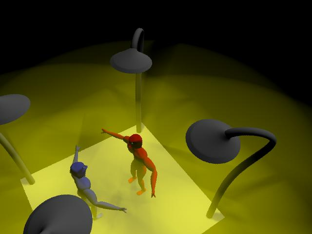

Jason Brody-Stewart (spudnic) cmps80c final project Files Final.avi final.mb pic1.jpg pic2.jpg readme.txt
Dance battle Modeling
The creatures were created by a wide range of methods. I started out by modeling the chest. I drew curve for the sections of the chest and lathed them together. I worked my way down the chest to the stomach with these sections lathing them as I went. Once I was done with the body(chest, stomach). I proceeded to model the head where I started out with a nurb sphere and modified the control points in order to make a head. I could not figure out how to connect the head to the body mesh so I just made a neck that went up into the head. I had the same problem for the arms, and legs I could not get them to connect to the body mesh. For the arms and the legs I used the same lathing technique I used on the chest. For the hands I started out with a square and face extruded out the fingers. Then I smoothed the entire polygon and my hands were not created. For the feet I started out with the lathing the curves then I used the control point from the created nurb by the lathe and morphed them into feet. I also built a skeleton for the creatures in order to make them move some what realistically. I used the IK-handles inorder to make this process easier. The light poles I used a simple lathe of a circle along a curve. I had a difficult time attaching the light shaded to the light pole, I used a combination of lathing curves and the attach command from the nurb drop down list. I also used the duplicate command a fair amount to make the object some what symmetrical. But as you can imagine you can not just duplicate the object from the right arm to the left arm, they are actually mirrored. So after I duplicated the object I and to adjust the meshes to make them look like mirror of the other object.
Animation I start out by adding in the sound track and moving the main joint to bounce with the beat. In order to make the feet and arms bend as he bounces I had to set a key at the beginning for the ikhandle. Once a had around 180 frames animated to the beat I had them jump up high and then land in a stance to attack. From this point on I used the Ik-handles to animates the creature. When he makes a big move I animated the main joint and then the ik-handles to move accordingly. Over all I animated a total of 421 frames.
problems- When I brought the animation into my lab top the skin seems no longer to bind to the actual bones. So I will show from my demonstration a wire frame playblast from my home computer. That way you can see how the skin was moving compared to bones. I also had trouble with the sound being rendered into the final animation. So what I did was create a jpg seq of frames and then using permier 6.0 I added the sound back in. But of course the final animation is too big to submit. So I will submit a few frames from this sequence.
Movie-Since I was able to compress the video file Professor Willams said that she wanted me to submit it. If you have any problem viewing the avi file you can email at (spudnic@cats.ucsc.edu) att: movie conversion I am not sure exactily which compressior I used, but I believe it was DivX fast motion. When I play the file back it says that it is using a DivX Decoder Filter.
